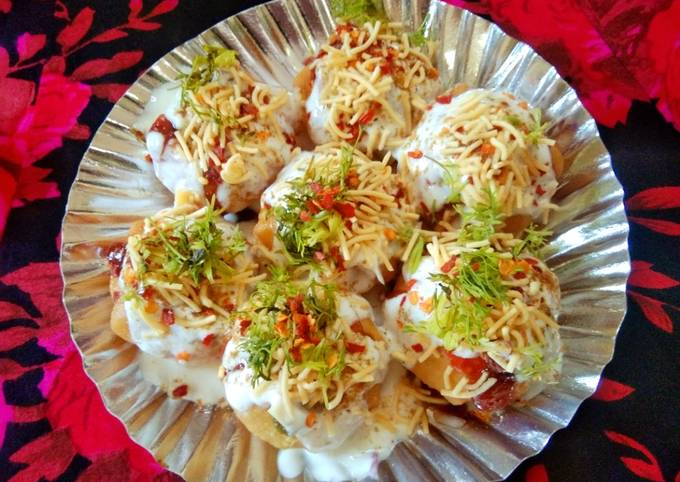
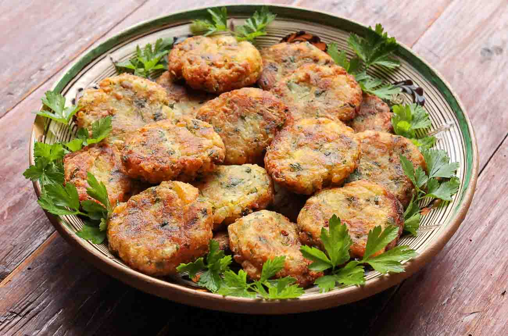
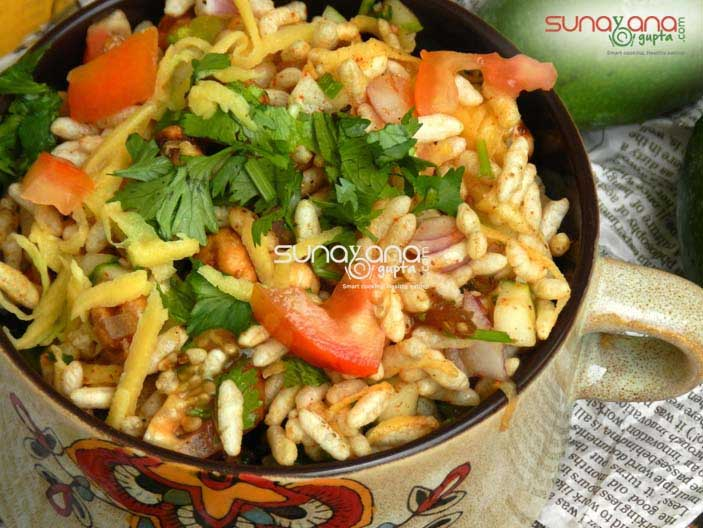
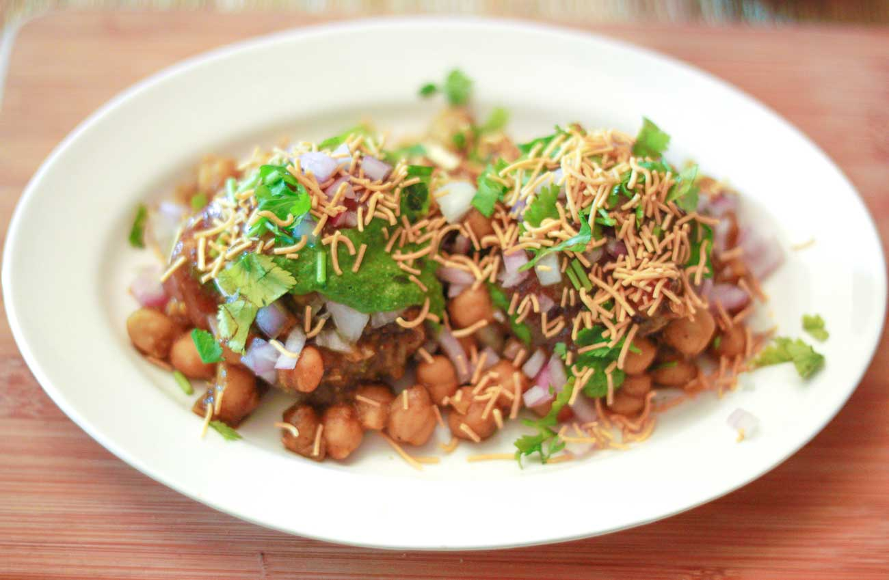

pani puri
Homemade Pani Puri Recipe -Calcutta Style Puchka Recipe

papdi Chaat
Dahi Papdi Chaat Recipe | How to make Papdi Chaat at Home | Dahi Papri Chaat Recipe

Dahi puri
Recipe of Street Style Dahi Puri How to make Dahi puri Chaat at Home

Aloo Tikki Recipe
Aloo Tikki Recipe - Spicy Potato Patties or Cutlets

Bhel Puri
Bhel Puri With Raw Mango Recipe How to make Bhel Puri With Raw Mango Recipe

Chole Aloo Tikki Chaat
Chole Aloo Tikki Chaat Recipe - An Indian Street Food Snack How to make Chole Aloo Tikki Chaat Recipe - An Indian Street Food Snack

kalan chaat
Mushroom Kalan Masala | Rottu Kadai Kalan/p>
Sabudana Vada
Sabudana Vada Recipe - Deep Fried Sago Patties/Cutlets How to make Sabudana Vada Recipe - Deep Fried Sago Patties/Cutlets